围绕「提升用户满意度、提升使用效率、降低认知负荷、建立用户信任」的设计目标， 通过关键接触点重构认知旅程，并设定体验度量指标。
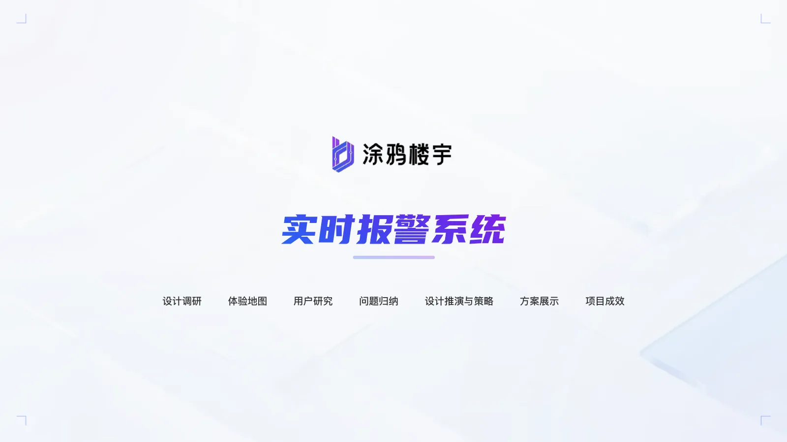
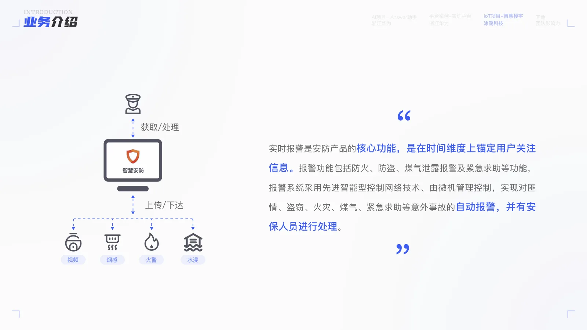
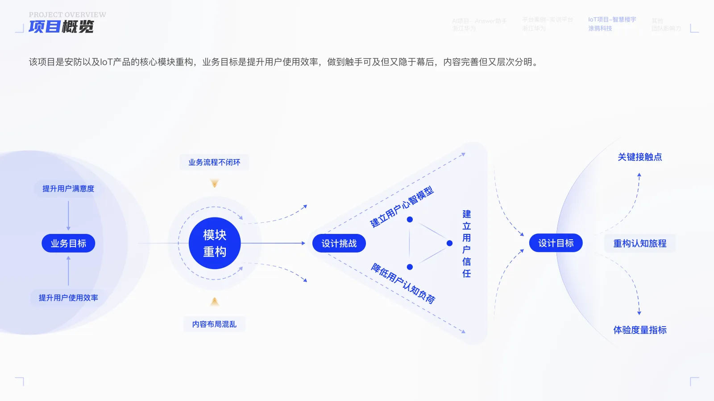
梳理过往方案的入口弱、无聚合、操作效率低、处理无闭环等问题；用体验地图还原「报警发生前 → 发生 → 查看 → 处理」全阶段的行为、想法与情绪曲线，定位机会点。
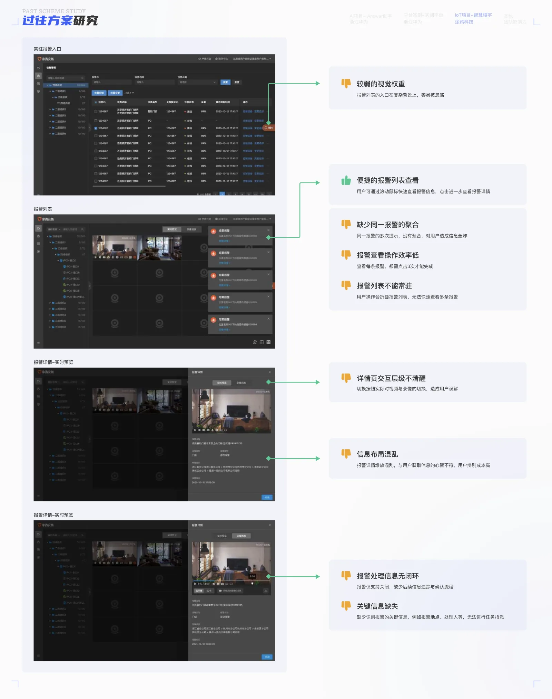
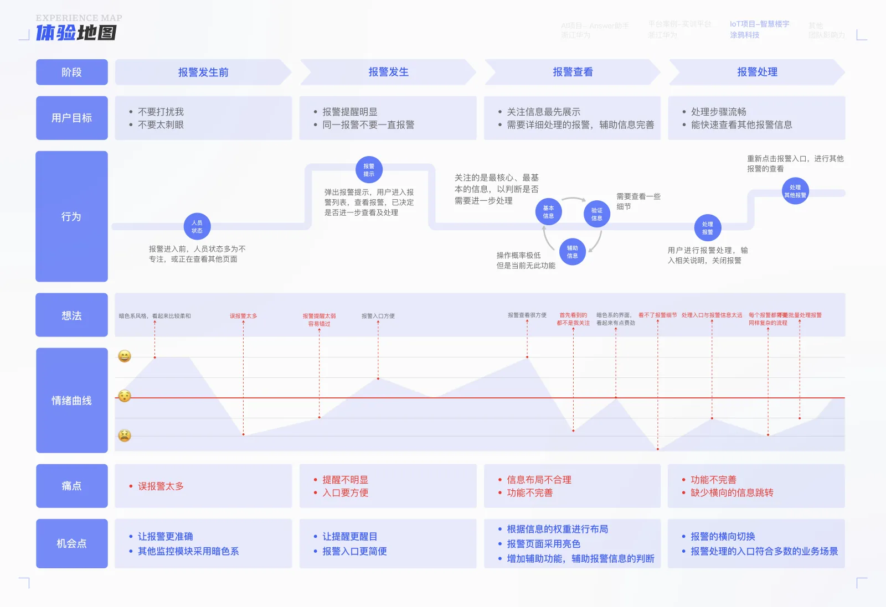
通过同理心地图与用户画像（安保 / 值班人员），还原用户的所说、所想、所做与感受，识别误报警多、提醒弱、信息分散等核心痛点。
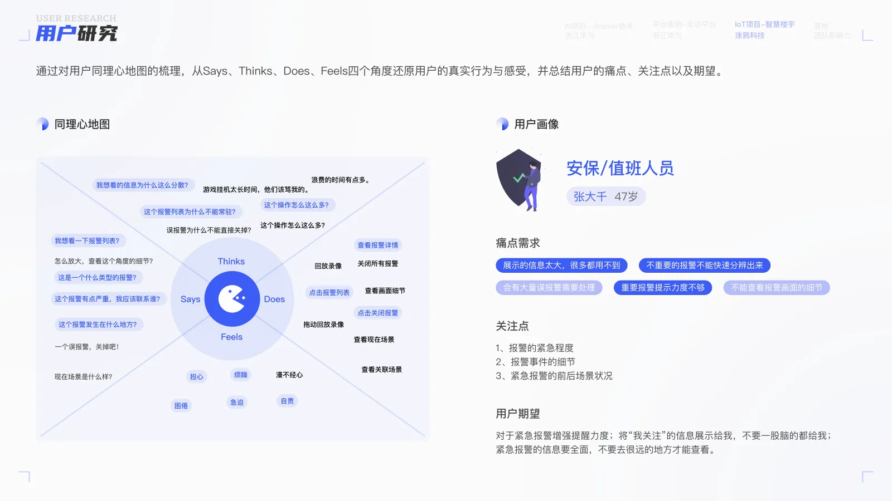
归纳「认知不对等、页面逻辑混乱、缺乏场景细化」三大核心问题；按报警事件的「定性 / 紧急性 / 频率」做业务推演， 明确数据优先级与「渐次推进、便捷触达、强化关键信息」的设计策略。
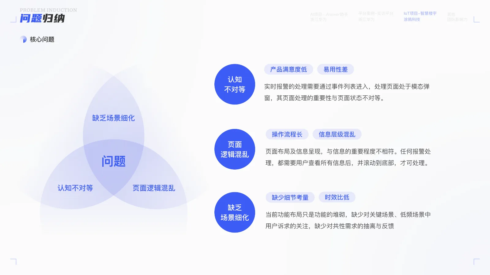
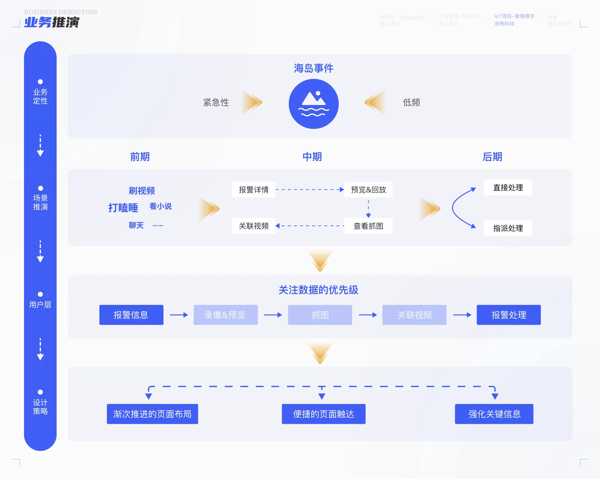
确立「渐次推进、便捷触达、强化信息」的设计目标，重构页面元素结构， 输出「更便捷报警入口、嵌入式报警列表、批量处理、关联视频」等方案，覆盖默认页、报警列表与详情页。
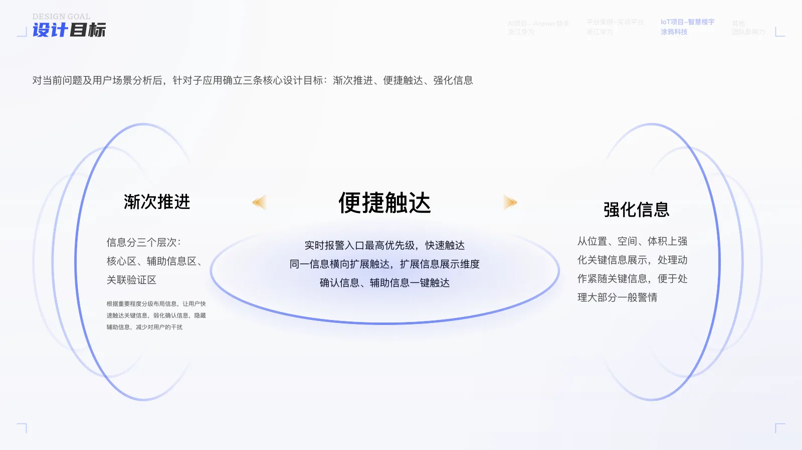
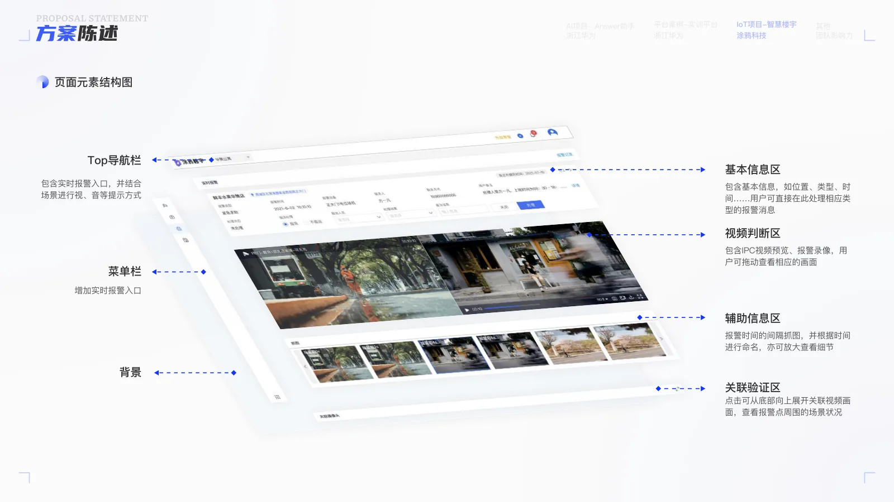
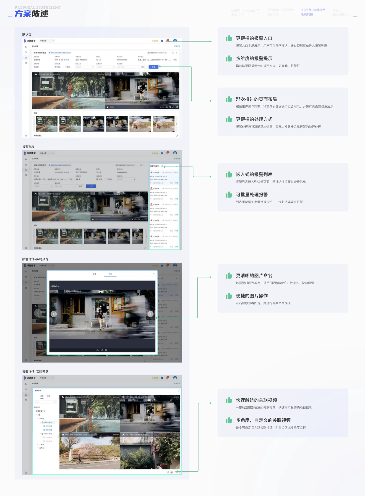
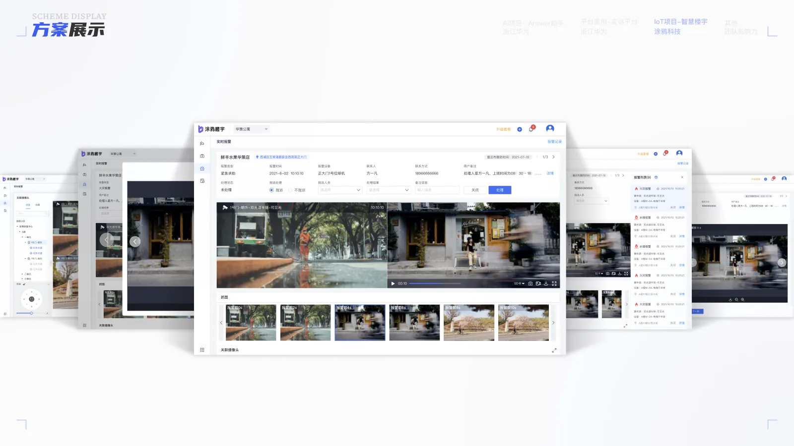
报警处理效率提升 70%，批量处理提升 90%（数量越多提升越大），单条报警处理由四步缩减为两步；用户满意度由 3.29 提升至 4.50，沉淀 3 项理论 / 业务组件 / 新方法，方案作为安防套件整合进其他产品线。
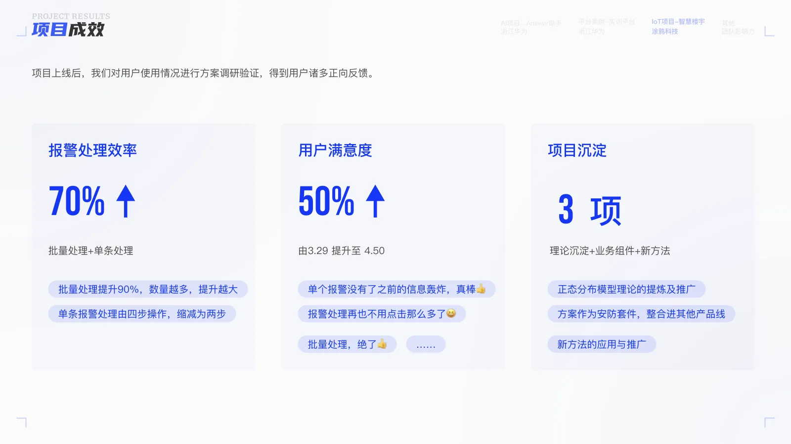
以下为产品真实界面（高分辨率），展示实时报警与视频监控的核心场景。
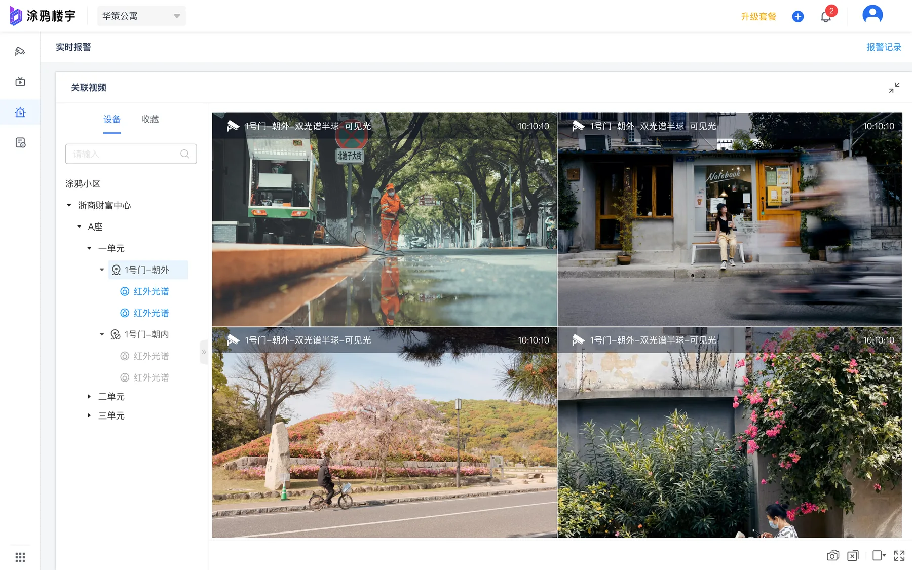
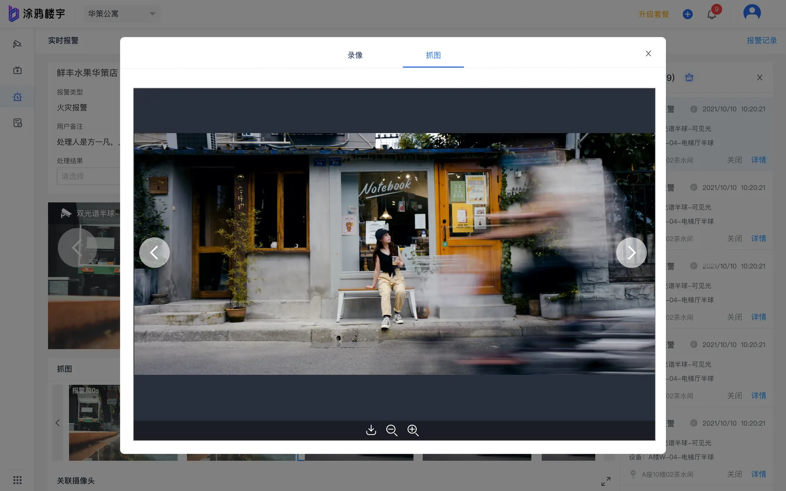
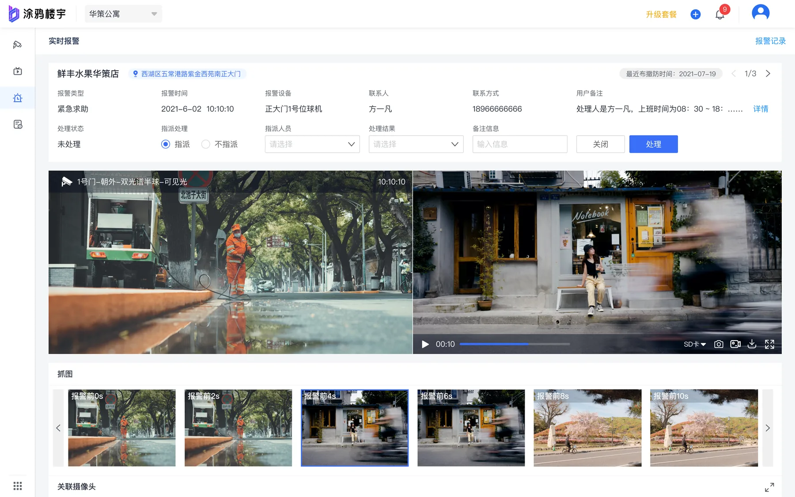